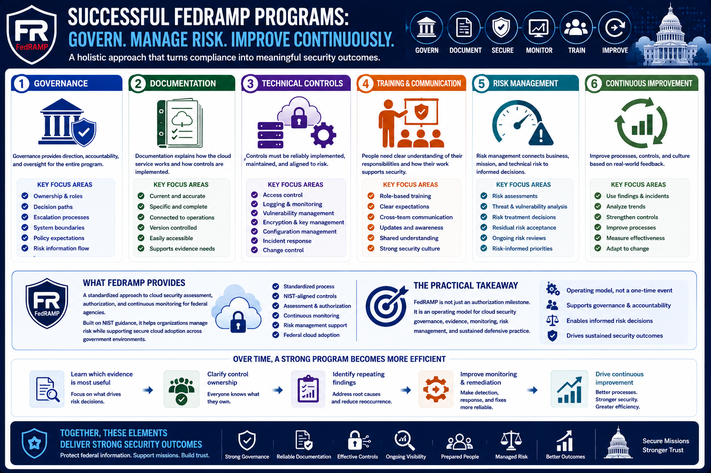

What Is FedRAMP?
Building a FedRAMP Program
Connecting to LMS... Progress: in progress
Version 1.0 | Date: 2026-06-16 | Educational overview of FedRAMP concepts.

Narration
Successful FedRAMP programs combine governance, documentation, technical controls, monitoring, training, risk management, and continuous improvement. The strongest programs treat compliance activities as support for meaningful security outcomes.
Governance defines ownership, decision paths, escalation processes, system boundaries, policy expectations, and how risk information flows to the right people.
Documentation explains how the cloud service works and how controls are implemented. It should be current, specific, and connected to real operational practices rather than treated as a separate exercise.
Technical controls need reliable implementation and maintenance. Access control, logging, vulnerability management, encryption, configuration management, incident response, and change control all require ongoing care.
Training and communication help people understand their responsibilities. FedRAMP work often spans engineering, operations, security, compliance, product, customer, and leadership teams, so expectations need to be clear.
Continuous improvement helps the program stay useful. Findings, incidents, customer questions, operational issues, and monitoring results should feed back into process improvements and control strengthening.
FedRAMP provides a standardized approach to cloud security assessment, authorization, and continuous monitoring for federal agencies. Built on NIST guidance, it helps organizations manage risk while supporting secure cloud adoption across government environments.
The practical takeaway is that FedRAMP is not just an authorization milestone. It is an operating model for cloud security governance, evidence, monitoring, risk management, and sustained defensive practice.
Over time, a strong program should become more efficient. Teams learn which evidence is most useful, where control ownership needs clarification, which findings repeat, and how to make monitoring and remediation more reliable.